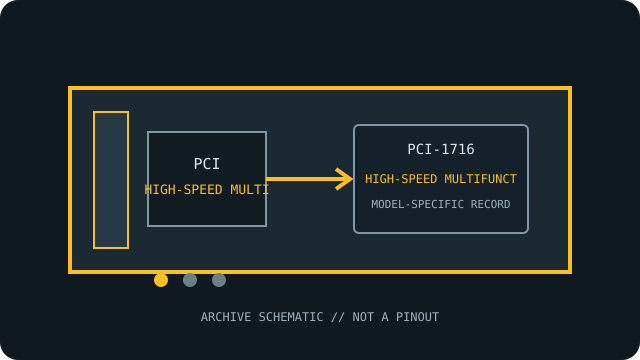

[ INDIVIDUAL COMPONENT // HIGH-SPEED MULTIFUNCTION DAQ ]
Advantech PCI-1716
16-bit multifunction acquisition with 16 single-ended or 8 differential inputs and a 250 kS/s aggregate sample rate. This model-specific archival record separates published specifications from system-compatibility assumptions.

MODEL SCOPE: Advantech PCI-1716. Confirm exact board label, revision, connector/accessory, firmware and host slot before installation.
Reference specifications
| Exact model | Advantech PCI-1716 |
|---|---|
| Host bus / lanes | 32-bit PCI; conventional PCI, not PCI Express. PCIe lanes: not applicable; this is a PCI model. |
| Channels, ranges and resolution | 16 single-ended or 8 differential analog inputs, software-selectable; 16-bit A/D at up to 250 kS/s aggregate; selectable input ranges from ±0.625 V through ±10 V and corresponding unipolar ranges. The PCI-1716 includes two 16-bit analog outputs, 16 digital inputs, 16 digital outputs and one 16-bit counter. |
| Isolation / safety rating | No galvanic isolation is specified for PCI-1716 analog or digital channels; use appropriately isolated signal conditioning where required. |
| Operating system and API | Windows: Advantech DAQNavi / device-driver API family; check the current supported OS, driver release and 32/64-bit limitations for this legacy PCI board. |
| Compatibility notes | Do not confuse PCI-1716 with PCI-1716L variants. Verify the terminal block, analog input mode and grounding scheme; neither the PCI slot nor software driver implies electrical isolation. |
Compatibility, care & archival notes
- Verify the full model suffix and revision against the manufacturer's manual; similarly numbered variants can change I/O functions.
- Use a conventional PCI slot of supported voltage/keying; the card is not a PCIe x1/x4/x8/x16 device.
- Record driver version, OS bitness, connector accessories, wiring and calibration state alongside any installation.
Sources & further reading
- Advantech — PCI-1716 product specifications and technical downloadsManufacturer specifications and technical-download entry for the exact model; verify the board revision and document revision.
- Advantech — Advantech manual search for PCI-1716Manufacturer manual or datasheet source for installation, signal limits and programming; the model-specific guide governs exact compatibility.
- Advantech — DAQNavi Assistant VI User GuideManufacturer software/API reference; not a guarantee that a legacy board is supported by every current OS package.